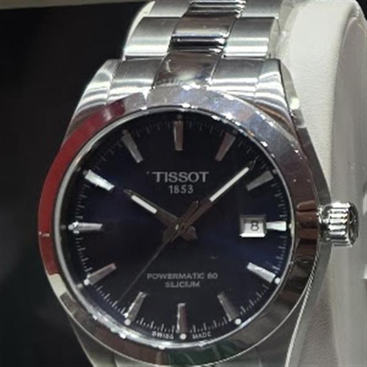

Verified reference · original Lumio photograph
Tissot Gentleman
40 mm Powermatic 80
The black Tissot photographed by Lumio in store is the Gentleman 40 mm Powermatic 80 Silicium: a steel Swiss automatic with an 80-hour reserve, a date and a restrained dial that moves easily from work to dinners.
Reference
T127.407.11.051.00 · black dial
Official Canadian price
CAD 1,195 · checked 9 Oct 2026
Key specifications
40 mm 316L steel · sapphire crystal with anti-reflective coating · Swiss automatic Powermatic 80 · 80-hour reserve · patented silicon balance spring · date · 100 m water resistance
Photo
Original Lumio store photography
